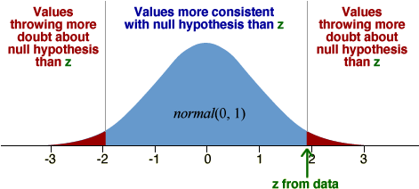

Statistical distance and test statistic
The p-value for testing a hypothesis about the mean, µ, when σ is known, is a tail area from the normal distribution of the sample mean and can be evaluated in the usual way using a z-score. This calculation can be expressed in terms of the statistical distance between the parameter and its estimate,

In the context of a test about means,

Since z has a standard normal distribution (zero mean and unit standard deviation) when the null hypothesis holds, it can be used as a test statistic.
P-value
The p-value for the test can be determined from the tail areas of the standard normal distribution.

For a two-tailed test, the p-value is the red tail area.
Quality control for cornflake packets
The diagram below repeats the simulation that we used earlier to test whether a sample mean weight of 10 cornflake packets of 529 gm is consistent with a packing machine that is set to give normally distributed weights with µ = 520 gm and σ = 10 gm.
Again click Accumulate and hold down the Simulate button until about 100 samples of 10 packets have been selected and weighed. The p-value is the probability of getting a sample mean further from 520 gm than 529 gm — either below 511 gm or above 529 gm and the simulation provides an estimate. However a simulation is unnecessary since we can evaluate the p-value exactly.
Select Normal distribution from the pop-up menu on the bottom right to replace the simulation with the normal distribution of the mean,

From its tail area, we can calculate (without a simulation) that the probability of getting a sample mean as far from 520 as 529 is exactly 0.0044. This is the exact p-value for the test.
P-value from statistical distance
Finally, consider the statistical distance of our estimate of µ, 529 gm, from the hypothesised value, 520 gm.

Select 'Statistical distance' from 520 from the middle pop-up menu to show how the p-value is found using this z-score.
Since the p-value is so small (0.0044), we conclude that there is strong evidence that the population mean, µ, is not 520.
Weights of courier packages
A courier company suspected that the weight of recently shipped packages had dropped. From past records, the mean weight of packages was 18.3 kg and their standard deviation was 7.1 kg. These figures were based on a very large number of packages and can be treated as exact.
Thirty packages were sampled from the previous week and their mean weight was found to be 16.8 kg. The data are displayed in the jittered dot plot below.
If the null hypothesis was true, the sample mean would have the normal distribution shown in pale blue. Although the sample mean weight is lower than 18.3 kg, it is not particularly unusual for this distribution, so we conclude that there is no evidence that the mean weight has reduced.
The right of the diagram shows how the p-value is calculated from a statistical distance (z-score).
Choose Modified Data from the pop-up menu. The slider allows you to investigate how low the sample mean must become in order to give strong evidence that µ is less than 18.3.